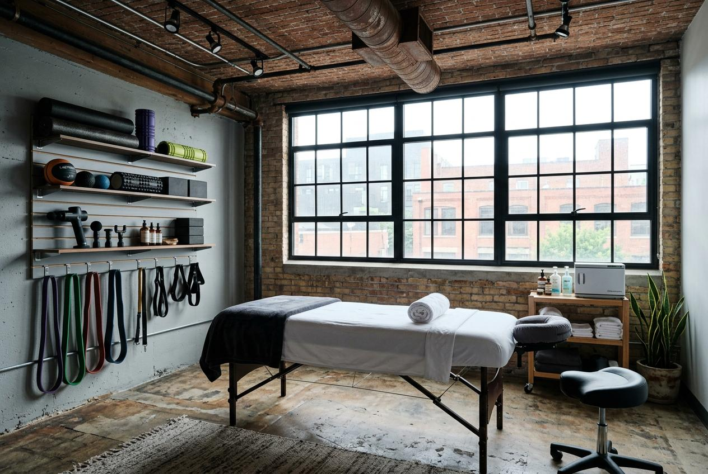

對許多在台北工作的男性來說，下班後想要的就是能直接在家恢復身體狀態。台北男士到府按摩讓你不用出門，就能享受專業服務。但第一次預約時，整個流程該怎麼進行？從預約到結束，每個環節有哪些要注意的地方？這篇文章整理完整的5個流程環節，幫你在預約前做好準備。
為什麼男士會選擇按摩服務？
許多男性長時間坐在辦公室處理工作，或是因為運動後需要放鬆肌肉，回家時已經沒有多餘力氣再出門。這時候，能夠直接在家裡接受服務，省下交通時間，對生活忙碌的台北上班族來說相當實用。不需要特別安排行程，也不用擔心按摩結束後還要搭車回家，身體可以直接休息。
台北男士到府按摩常見服務項目
到府場景適合的項目，主要考量空間與設備條件。以下幾種是常見的選擇：
- 全身按摩：針對背部、肩颈、腿部等部位進行放鬆，適合長時間工作的上班族。
- 運動按摩：針對運動後的肌肉緊繃狀態，幫助身體恢復靈活度。
- 局部加強：如果特定部位如腰部或肩膀特別緊繃，可以選擇集中處理的方案。
- 長時間方案：部分業者提供90分鐘或120分鐘的選項，適合想要深度放鬆的人。
建議在預約前先確認自家空間是否足夠，例如是否有適合按摩的床或地板空間。
台北男士按摩服務流程怎麼安排？
到府按摩的流程和門市略有不同，需要多考慮地點確認與空間準備。以下是常見的5步預約流程：
- 線上預約或電話聯繫：選擇適合的時間，並告知地址與需求項目。
- 確認服務項目與時間：與業者確認按摩類型、時長與費用，避免當天產生誤會。
- 到府前準備：整理出足夠空間，準備毛巾或更換衣物，保持環境乾淨。
- 服務進行：按摩師到達後，會先簡短溝通身體狀況，再開始進行。
- 結束後休息：建議結束後留15至20分鐘讓身體平穩，再恢復日常活動。
台北男士按摩價格通常怎麼看？
到府按摩的價格通常會比門市高一些，因為包含了交通時間與出勤成本。以下整理到府按摩5個流程環節的時間與內容對照：
| 流程環節 | 所需時間 | 主要內容 |
|---|---|---|
| 線上預約溝通 | 5至10分鐘 | 確認時間、地點、項目與費用 |
| 確認服務項目 | 3至5分鐘 | 說明身體狀況與需要加強的部位 |
| 到府前準備 | 10至15分鐘 | 整理空間、準備毛巾與更換衣物 |
| 服務進行過程 | 60至120分鐘 | 依選定項目進行按摩 |
| 結束後建議 | 15至20分鐘 | 身體休息與簡單保養 |

台北男士按摩推薦怎麼選？
選擇到府按摩服務時，可以從幾個方向評估：首先，確認業者是否有明確的服務項目與收費方式，價格公開的店家比較讓人安心。其次，查看其他客戶的評價與回饋，了解實際服務品質。最後，注意溝通是否順暢，能夠快速確認時間與需求的業者，通常服務也比較穩定。
到府按摩與門市按摩有什麼差別？
到府按摩主要的優點是方便，不用花時間通勤，結束後可以直接休息。但相對來說，家中環境可能沒有門市專業的按摩床與設備。門市按摩則有固定的空間與工具，環境經過特別設計，適合注重氛圍的人。兩者的選擇取決於個人生活型態與需求。
預約前需要注意哪些事項？
預約到府按摩前，建議先確認幾個細節：地址與交通方式是否方便業者前往、家中有沒有足夠的施作空間、是否有寵物或其他人會影響服務進行。另外，也要確認業者是否會攜帶必要的用品，還是需要自行準備。這些小細節能讓當天流程更順暢。
選擇按摩服務的重點整理
台北男士到府按摩的流程並不複雜，只要按照預約、確認、準備、施作、休息這5個環節進行，就能有順暢的體驗。無論你是因為工作忙碌還是運動後需要恢復，選擇適合自己的服務項目與時間長度，才能讓身體真正得到放鬆。如果你正在找尋可靠的台北到府按摩服務，金手指按摩提供專業的到府服務，歡迎了解更多資訊。
常見問題
到府按摩需要準備什麼？
準備足夠的空間、乾淨的毛巾與舒適的衣物即可。部分業者會攜帶按摩巾與相關用品，預約時可以先確認。
到府按摩的時間怎麼安排比較好？
建議預留比按摩時間多30分鐘左右的空檔，讓服務前有時間準備，結束後也能稍作休息。
到府按摩的費用會比門市貴嗎？
通常會略高一些，因為包含交通與出勤成本。具體差異各家不同，預約時可以先詢問清楚。
第一次預約要注意什麼？
第一次建議選擇較短的方案，例如60分鐘，先了解流程與自身感受，之後再調整時間長度。
到府按摩安全嗎？
選擇有明確資訊、評價良好且溝通清楚的業者，並在預約時確認對方身份與服務內容，能大幅降低風險。